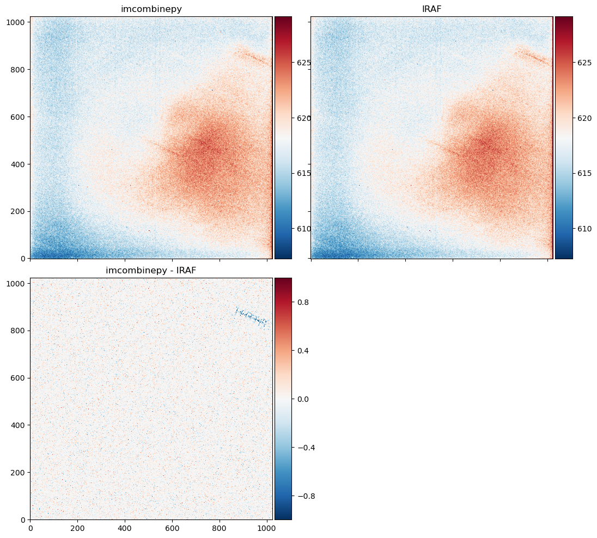
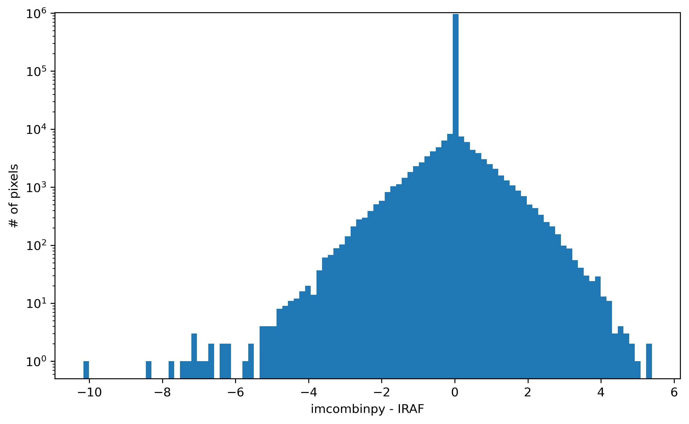

Comparison with IRAF¶
imcombinepy.combine.fitscombine() function is made to replace IRAF’s IMCOMBINE. It is using imcombinepy.combine.ndcombine(), but in a way that is designed for FITS file formats. I tried to follow IRAF’s IMCOMBINE, while some parts are changed.
At the moment (2020-07-20 12:24:24 (KST: GMT+09:00)), the testcombine folder which contains all the data (FITS files) I used below is available via my personal Dropbox.
For the generation of all test FITS files, I fixed the following arguments to IMCOMBINE:
IRAF IMCOMBINE imcombinepy
* nkeep = 3 nkeep=3, maxrej=ncombine
* lsigma, hsigma = 2 sigma=(2,2)
* sigscale = 0 non-zero sigscale not implemented
* mclip+ cenfunc='median'
i.e., I did median-centered 2-sigma clipping if rejection is turned on. The output file name has the following convention:
<offsets>_<combine>_<reject>_<zero>_<scale>[_mask/_nrej/_sigma].fits
If 'none' is used, it is denoted as x. The offsets are set to none (i.e., image coordinate) most of the time, because IRAF seems to calculate the WCS offset incorrectly (see note in fitscombine()’s offsets argument).
Testing IRAF Results¶
In IRAF IMCOMBINE, we can specify output files. I used, e.g., the following CL sclipt:
!rm x_med_sc_x_x*.fits
imcomb *2005UD* combine=med offsets='none' scale='none' zero='none' reject=sigclip lsigma=2 hsigma=2 mclip+ nkeep=3 sigscale=0 output=x_med_sc_x_x.fits rejmask=mask nrejmasks=nrej sigma=sigma
imcopy mask.pl x_med_sc_x_x_mask.fits
imcopy nrej.pl x_med_sc_x_x_nrej.fits
imcopy sigma.fits x_med_sc_x_x_sigma.fits
!rm *.pl sigma.fits
The log looks like this:
Jul 15 10:25: IMCOMBINE
combine = median, scale = none, zero = none, weight = none
reject = sigclip, mclip = yes, nkeep = 3
lsigma = 2., hsigma = 2.
blank = 0.
Images
bdfc_2005UD_20181012-140207_R_60.0.fits
bdfc_2005UD_20181012-140703_R_60.0.fits
bdfc_2005UD_20181012-141159_R_60.0.fits
bdfc_2005UD_20181012-141654_R_60.0.fits
bdfc_2005UD_20181012-142150_R_60.0.fits
bdfc_2005UD_20181012-142646_R_60.0.fits
bdfc_2005UD_20181012-143142_R_60.0.fits
bdfc_2005UD_20181012-143637_R_60.0.fits
bdfc_2005UD_20181012-144133_R_60.0.fits
bdfc_2005UD_20181012-144629_R_60.0.fits
bdfc_2005UD_20181012-145126_R_60.0.fits
bdfc_2005UD_20181012-145621_R_60.0.fits
Output image = x_med_sc_x_x.fits, ncombine = 12
Rejection mask = mask.pl
Number rejected mask = nrej.pl
Sigma image = sigma
mask.pl -> x_med_sc_x_x_mask.fits
nrej.pl -> x_med_sc_x_x_nrej.fits
sigma.fits -> x_med_sc_x_x_sigma.fits
Here I obtain the 3-D mask blahblah_mask.fits. Then I can check
- When
reject=nonein IRAF, maskmust be allFalse. (CONFIRMED)The output must be identical to the naive combination (
np.nanmedian(allimage, axis=0)) (CONFIRMED)
- When
np.sum(mask, axis=0)identical to_nrej.fitsfile? (CONFIRMED)Median of
original[~mask]alongaxis=0identical to output of IRAF? (NO)Sigma of
original[~mask]alongaxis=0identical to output sigma of IRAF? (NO)((data3d < (comb_iraf - 2*sigma_iraf)) | (data3d > (comb_iraf + 2*sigma_iraf)))identical tomask? (NO)
Although one who is interested in the reasons can check the source codes of IRAF and compare it with this package, I don’t think that’s very necessary at the moment, because it is likely due to the finely-tuned algorithms working behind the scenes under IRAF. (Note that imcombinepy’s sigma-clipping is slightly different from that of IRAF and astropy: the rejection of the latter two are cumulative. See the astropy GitHub issue). I compared the combined results from imcombinepy and IRAF for few images I had, and interestingly, some of artifact-like features visible in the IRAF result is not seen in imcombinepy results. Therefore, I just stick to the development of imcombinepy, not being bothered by the minor inconsistencies.
Codes¶
The codes for testing items to check the IRAF results are given below:
import glob
from astropy.stats import sigma_clipped_stats, sigma_clip
from astropy.io import fits
import bottleneck as bn
from matplotlib import pyplot as plt
import imcombinepy as icp
fpaths = icp.filelist("testcombine/*2005UD*.fits")
data3d = []
for fpath in fpaths:
data3d.append(fits.open(fpath)[0].data)
data3d = np.array(data3d)
fprefix = "x_med_sc_x_x"
comb_iraf = fits.open(f"testcombine/{fprefix}.fits")[0].data
mask_iraf = fits.open(f"testcombine/{fprefix}_mask.fits")[0].data.astype(bool)
sigma_iraf = fits.open(f"testcombine/{fprefix}_sigma.fits")[0].data
nrej_iraf = fits.open(f"testcombine/{fprefix}_nrej.fits")[0].data
# Test of item 1&2
np.testing.assert_array_almost_equal(np.sum(mask_iraf, axis=0), nrej_iraf)
if fprefix.endswith('_x_x_x'): # if no rejection happened
assert np.count_nonzero(mask_iraf) == 0
assert np.count_nonzero(bn.median(data3d, axis=0) != comb_iraf) == 0
# Test of item 3
data3d_nan = data3d.copy()
data3d_nan[mask_iraf] = np.nan
comb_iraf_test = bn.nanmedian(data3d_nan, axis=0)
np.testing.assert_array_almost_equal(comb_iraf_test, comb_iraf)
# Test of item 4
low_iraf = comb_iraf - sigma_iraf*2
upp_iraf = comb_iraf + sigma_iraf*2
mask_test = (data3d < low_iraf)|(data3d > upp_iraf)
np.testing.assert_array_almost_equal(mask_iraf, mask_test)
The last tests fails with the following error message:
---------------------------------------------------------------------------
AssertionError Traceback (most recent call last)
<ipython-input-7-96723bf8c563> in <module>
30 data3d_nan[mask_iraf] = np.nan
31 comb_iraf_test = bn.nanmedian(data3d_nan, axis=0)
---> 32 np.testing.assert_array_almost_equal(comb_iraf_test, comb_iraf)
[... skipping hidden 2 frame]
AssertionError:
Arrays are not almost equal to 6 decimals
Mismatched elements: 56893 / 1048576 (5.43%)
Max absolute difference: 25.471558
Max relative difference: 0.04220776
x: array([[590.2518 , 591.7997 , 604.74963, ..., 599.0934 , 601.85474,
612.655 ],
[597.7123 , 591.2198 , 589.5432 , ..., 601.42896, 603.2619 ,...
y: array([[592.3523 , 591.7997 , 604.74963, ..., 599.0934 , 601.85474,
612.655 ],
[597.7123 , 591.2198 , 592.72424, ..., 601.42896, 603.2619 ,...
and:
---------------------------------------------------------------------------
AssertionError Traceback (most recent call last)
<ipython-input-9-9a2f4a2f149f> in <module>
2 upp = comb_iraf + sigma_iraf*2
3 mask_test = (data3d < low)|(data3d > upp)
----> 4 np.testing.assert_array_almost_equal(mask_iraf, mask_test)
[... skipping hidden 2 frame]
AssertionError:
Arrays are not almost equal to 6 decimals
Mismatched elements: 109684 / 8388608 (1.31%)
x: array([[[False, False, False, ..., False, False, False],
[False, False, True, ..., False, False, True],
[False, False, False, ..., False, False, False],...
y: array([[[False, False, False, ..., False, False, False],
[False, False, False, ..., False, False, False],
[False, False, False, ..., False, False, False],...
A hint is that np.count_nonzero(np.sum(mask_test, axis=0) - nrej_iraf < 0) gives 20802 while np.count_nonzero(np.sum(mask_test, axis=0) - nrej_iraf > 0) gives 0. Therefore, in IRAF, internally additional rejection or restoration is happening, while the output mask or nrej files are not updated. Also, IRAF seems to use cumulative rejection scheme (see astropy issue), which sometimes give unexpected results (see my comment).
Visual Comparison of IRAF and imcombinepy Results¶
For this section, I used zero='median', zero_to_0th=True, irafmode=True, maxiters=10 to try to reproduce IRAF results as much as possible.
import imcombinepy as icp
def fnamecode(kwdict, key):
try:
val = kwdict[key]
except KeyError:
val = None
return 'x' if val is None else str(val).lower()
fpattern="testcombine/*2005UD*.fits"
fpaths = icp.filelist(fpattern)
combkw = dict(
offsets=None,
combine='med',
# scale="med",
zero="med",
zero_to_0th=True,
reject='sc',
cenfunc='med',
sigma=(2, 2),
ddof=1,
maxiters=10,
verbose=True,
overwrite=True,
nkeep=3,
irafmode=True,
memlimit=4.e+9,
return_dict=True,
full=True,
)
fstem = "{}_{}_{}_{}_{}".format(
fnamecode(combkw, 'offsets'),
fnamecode(combkw, 'combine'),
fnamecode(combkw, 'reject'),
fnamecode(combkw, 'zero'),
fnamecode(combkw, 'scale')
)
fname = fstem + ".fits"
print(fname)
res = icp.fitscombine(fpaths=fpaths, output=fname, **combkw)
from astropy.stats import sigma_clipped_stats
from astropy.io import fits
from matplotlib import pyplot as plt
from mpl_toolkits.axes_grid1 import ImageGrid
comb_iraf = fits.open(f"testcombine/{fname}")[0].data
comb = res['comb'].data
imgrid_kw = dict(
nrows_ncols=(2, 2),
axes_pad=(0.35, 0.35),
label_mode="L", #"L"
share_all=True,
cbar_location="right",
cbar_mode="each", #"each",
cbar_size="7%",
cbar_pad="1%"
)
_, med, std = sigma_clipped_stats(comb, sigma=3, maxiters=5, std_ddof=1)
vv = dict(vmin = med - 3*std, vmax = med + 3*std)
toplot = [
dict(X=comb, **vv),
dict(X=comb_iraf, **vv),
dict(X=comb-comb_iraf, vmin=-1, vmax=1),
dict(X=None)
]
fig = plt.figure(figsize=(12, 10))
# sub-gridding one of the Axes (see nrows_ncols)
grid = ImageGrid(fig, '111', **imgrid_kw)
for ax, cax, items, tit in zip(grid, grid.cbar_axes, toplot,
["imcombinepy", "IRAF", "imcombinepy - IRAF", '']):
if items['X'] is None:
ax.axis("off")
cax.axis("off")
else:
im = ax.imshow(**items, origin='lower', cmap='RdBu_r')
cax.colorbar(im)
ax.set_title(tit, fontsize=12)
# cax.set_xticklabels(np.around(cax.get_xticks(), 3), rotation=90, fontsize=10, horizontalalignment='center', verticalalignment='center')
# grid.cbar_axes[0].colorbar(im)
plt.tight_layout()
plt.savefig("comparison_wcs_sc_x_x.png", dpi=100, bbox_inches = "tight")
An example of the view:
 (drew by ax.hist((comb-comb_iraf).ravel(), bins=100))
The difference is not very large, although I am not so comfortable. Some mismatches are, I guess, due to the internal additional rejection/restoration inside IRAF.
Similar comparison using reject='ccdclip':
Why is IRAF always lower than imcombinepy..?